交互附件一览（截图版）
想看真交互，点每张图下方的「打开交互版」；或直接打开 interactive-all.html（22 个交互在一页里）。图片由本机 Chrome 无头截取，仅供参考版面。
第 1 讲 · 战略与方法 打开交互版 →
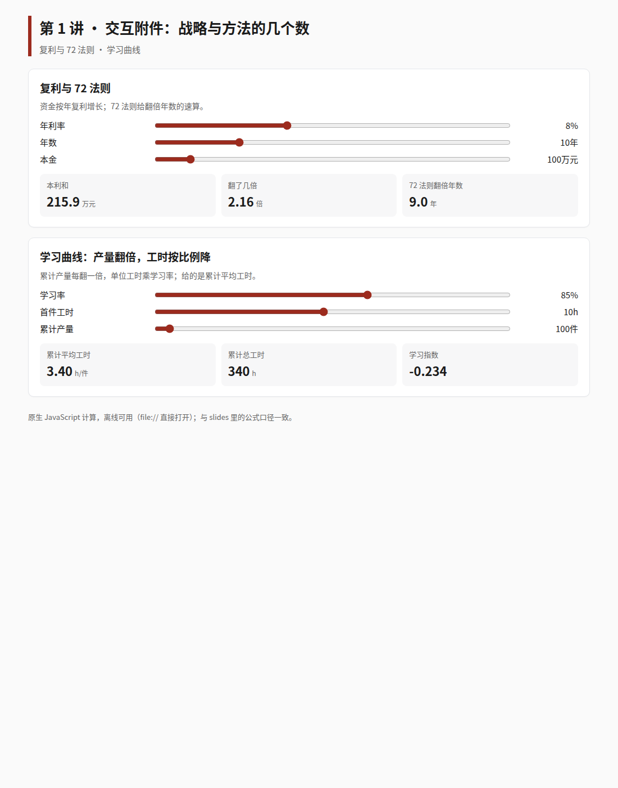
第 2 讲 · 过程能力与抽样 打开交互版 →
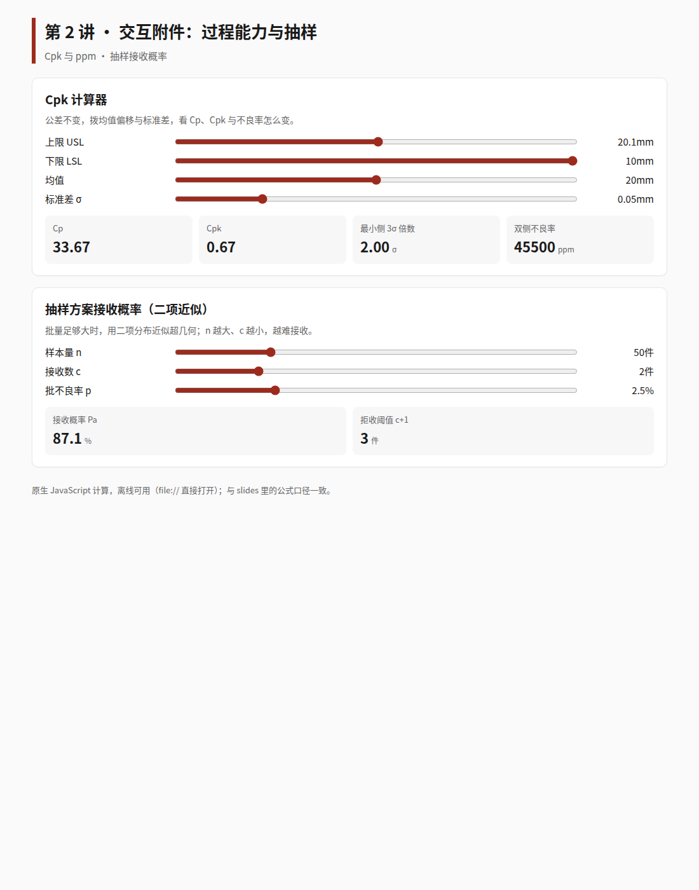
第 3 讲 · 效率与库存 打开交互版 →
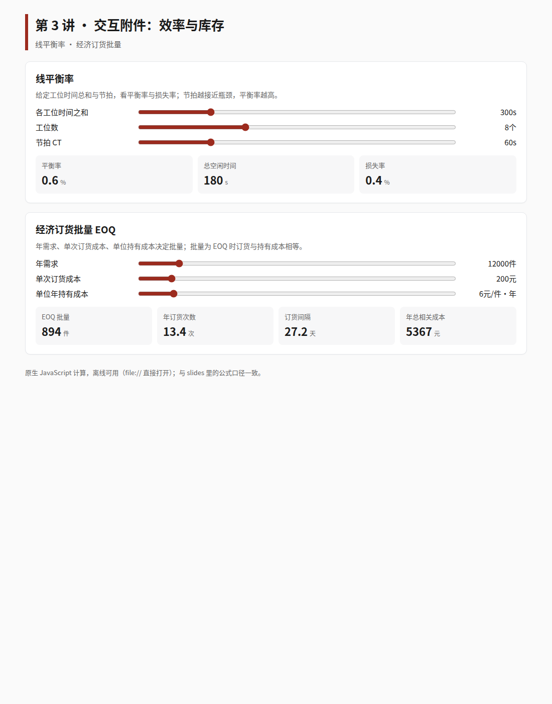
第 4 讲 · 风险与事故树 打开交互版 →
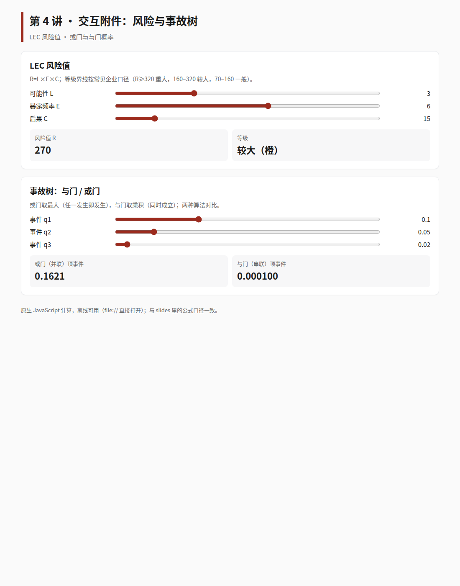
第 5 讲 · 成本/量本利/投资 打开交互版 →
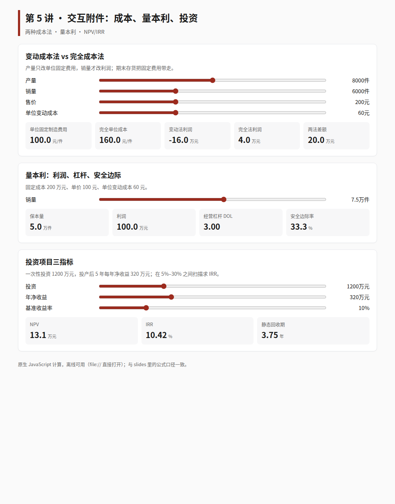
第 6 讲 · OEE 与物料需求 打开交互版 →
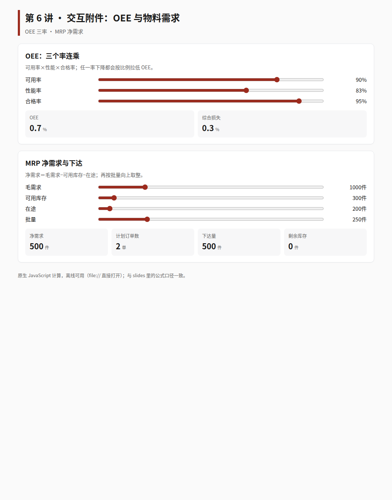
第 7 讲 · 库存与交付 打开交互版 →
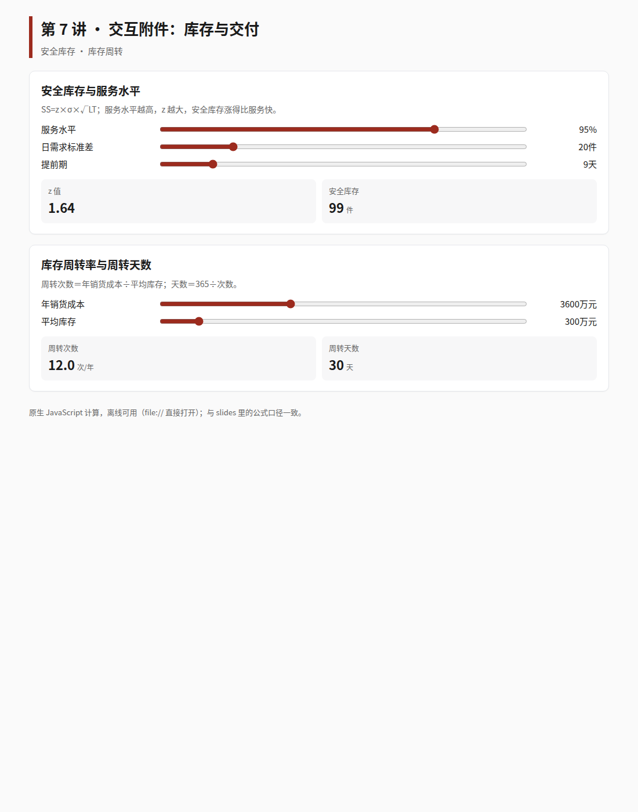
第 8 讲 · 伦理决策 打开交互版 →
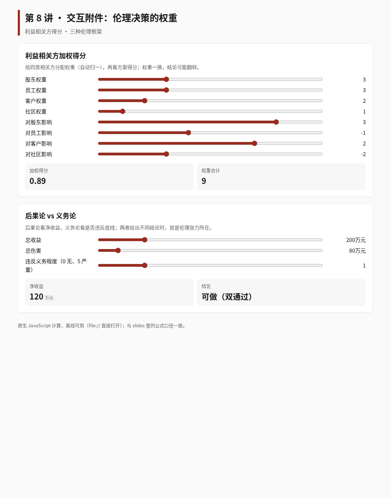
第 9 讲 · 风险矩阵与 ALARP 打开交互版 →
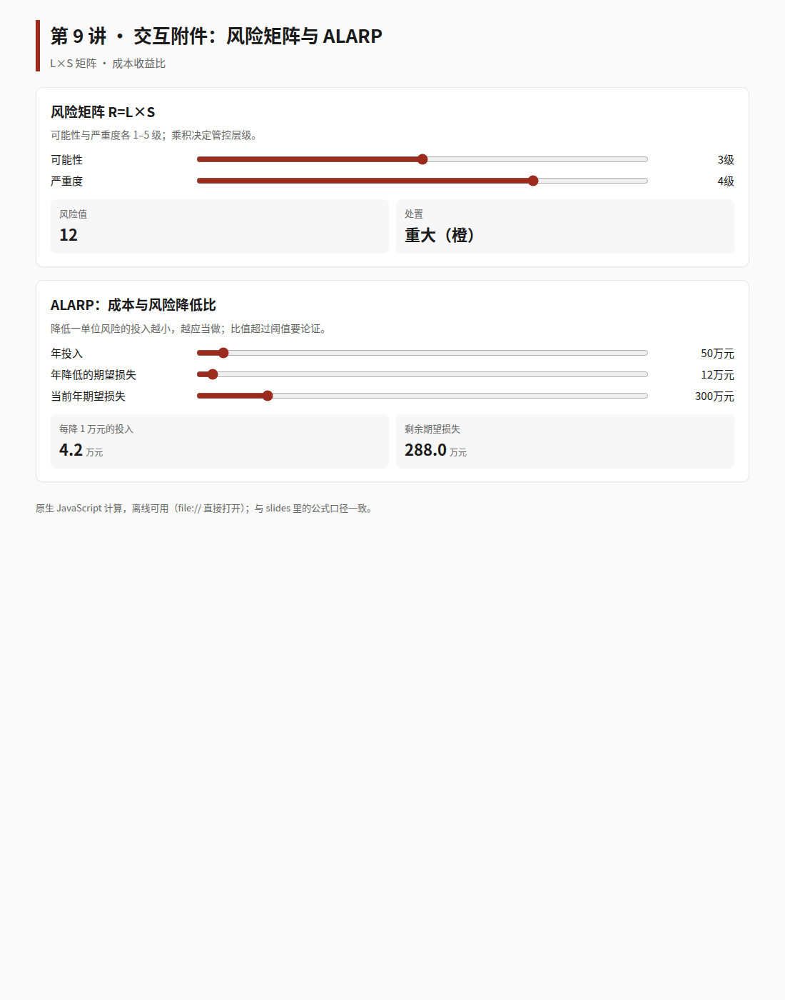
第 10 讲 · AI 质检 打开交互版 →
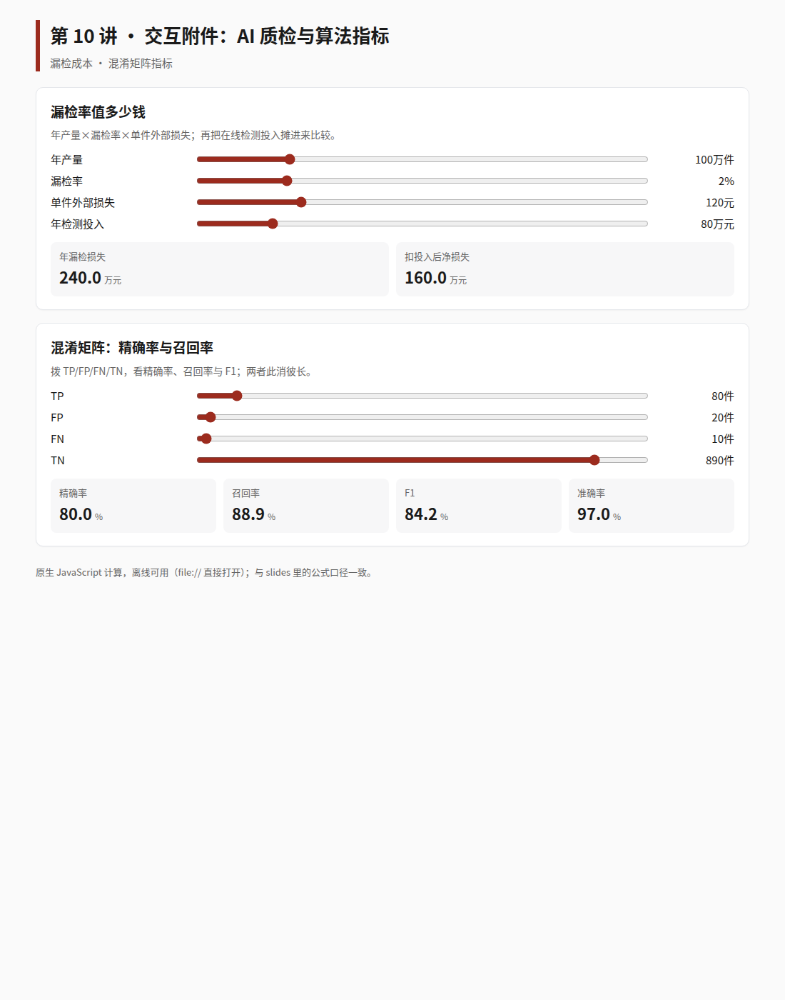
第 5 章专题 · 线性规划 打开交互版 →
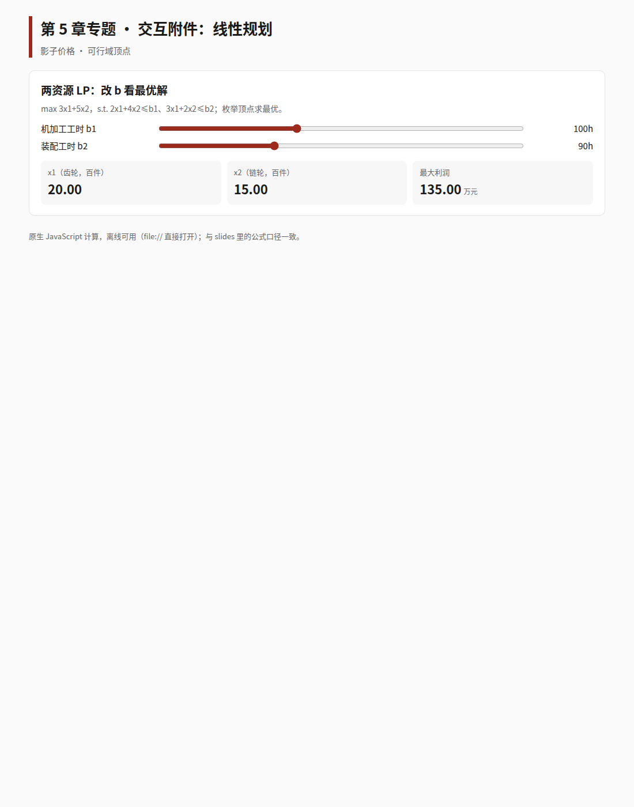